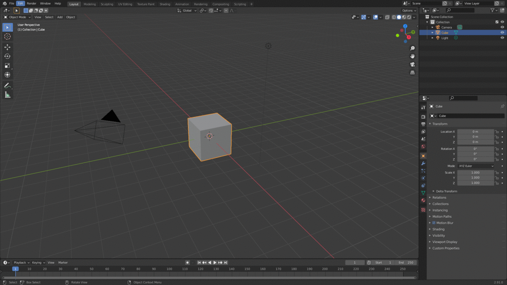
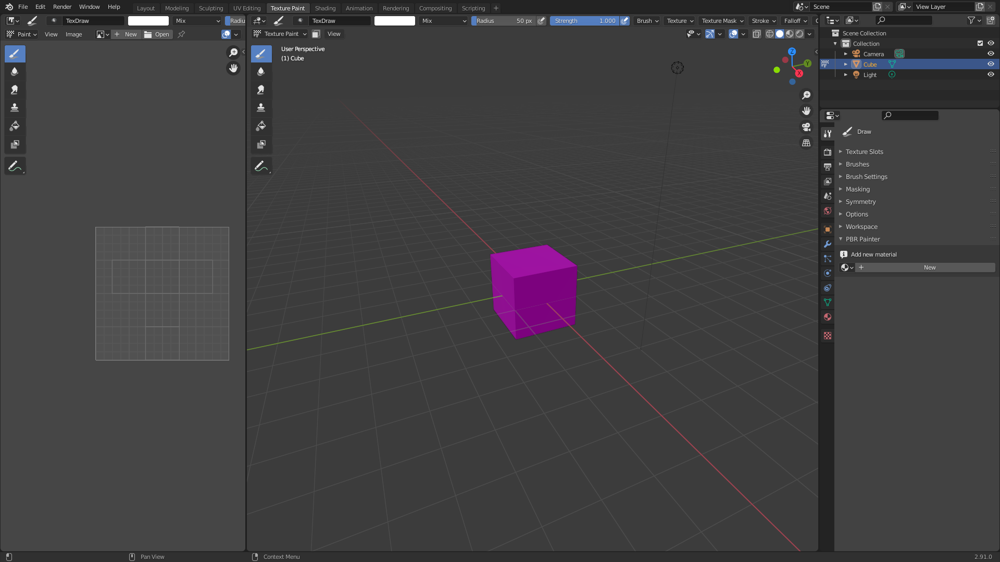

Getting Started
Installation
When you purchase PBR Painter, you will have access to the .zip file that contains the entire addon package.
This can be installed in Blender using the normal approach: 
Finding PBR Painter in Blender
PBR Painter is located in Texture Paint mode at the bottom of the Tools panel: 
Preparing for Painting
PBR Painter combines Blender's built in texture painting toolset with complex node setups (behind the scenes) to enable layered, multipass PBR painting. As such, preparing a mesh for PBR Painting is identical to the steps involved in preparing for traditional texture painting.
In other words, the mesh must first be UV unwrapped using whichever method you prefer. Then, a new material needs to be added, which can be done within PBR Painter's UI. Once this is done, you are ready to start adding PBR Layers and painting your PBR texture!
Important Considerations (PLEASE READ)
There are a few things to consider before getting started as these will have a considerable impact on your experience with PBR Painter:
-
PBR Painter generates complex node groups associated with each layer. These are created, modified, connected and deleted using the various tools within the addon, so you never actually need to even look at the node tree. It is important to NOT delete any of the node groups created by PBR Painter as this could cause issues with the addon, and may break the addon entirely. If you feel that there should be more flexibility with regards to how PBR Painter could be incorporated with a manual node setup, please send me an email (w2gardner@gmail.com) and I will try to incorporate your suggestions into future versions of the addon.
-
As is discussed in the following sections, there is a button within the PBR Painter UI called Save Images, which automatically saves all modified images. It is important that images are regularly saved, to avoid losing any work due to unexpected crashes etc.
-
There is a limit on the number of image texture nodes that can be represented using Eevee within the Material Preview mode. If you reach this limit (somewhere between 30-40) by adding many PBR layers, your texture will turn solid pink. If this happens, there are two potential options going forward: Option one is to hide one or more lower layers while you work on new layers. Option two is to take advantage of the Merge Visible tool in the PBR Painter UI (discussed more in the following sections), which will merge all of the currently visible active layers into a single layer, which uses corresponding merged image textures.